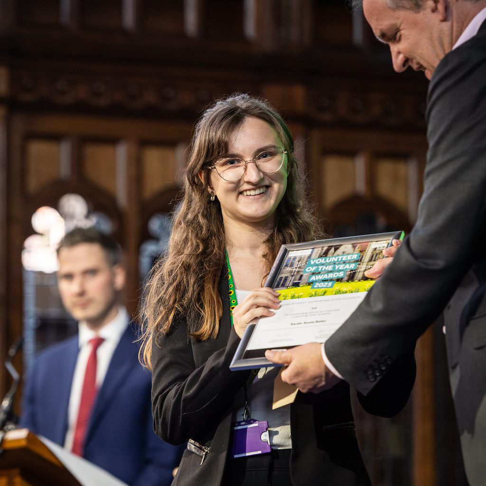

I’m Sonia, a final-year MMath Mathematics student at the University of Manchester. I am especially interested in noncommutative algebra, quantum groups and representation theory, although I am generally drawn to general structural questions and connections between different areas of algebra.
Over the past year, I have worked on two quite different algebra projects. My third-year project explored Ore extensions, Noetherianity and prime ideals, while my summer research at the University of Edinburgh focused on representations of a quantum Lie superalgebra. This year, I am beginning an MMath project involving supersingular elliptic curves and their associated quaternion algebras.
I also care a great deal about mathematics education and the experience of learning mathematics. I am a Fellow of the Higher Education Academy and have worked with students and academic staff on educational research and designing teaching resources.
Writing is another important part of what I do. I care deeply about creativity and community. I’m originally from Romania, but Manchester is my chosen home!
